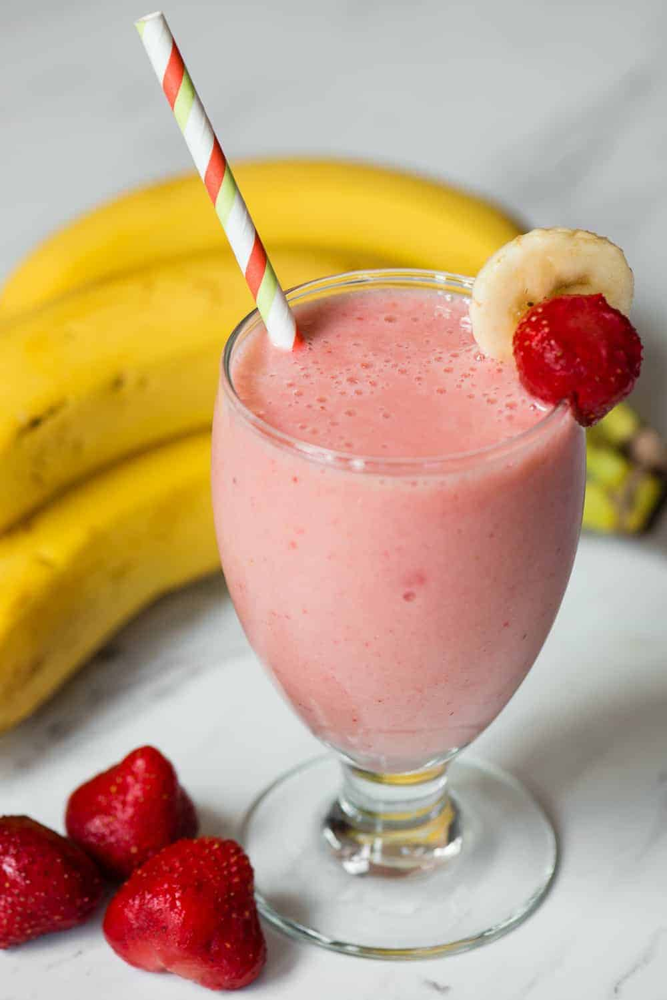

Banana Strawberry Smoothie

Description
A smoothie or smoothy is a drink made by puréeing fruit and vegetables in a blender.
A smoothie often has a liquid base such as fruit juice, dairy products,
such as milk, yogurt, ice cream or cottage cheese.
Ingredients
- 1 quart strawberries, hulled
- 1 banana, broken into chunks
- 2 peaches
- 1 cup orange-peach-mango juice
- 2 cups ice
Instructions
- Blend strawberries, banana and peaches together.
- Blend until fruit is pureed.
- Add juice and blend.
- Add ice and blend to desired consistency.
- Pour into glasses and serve.